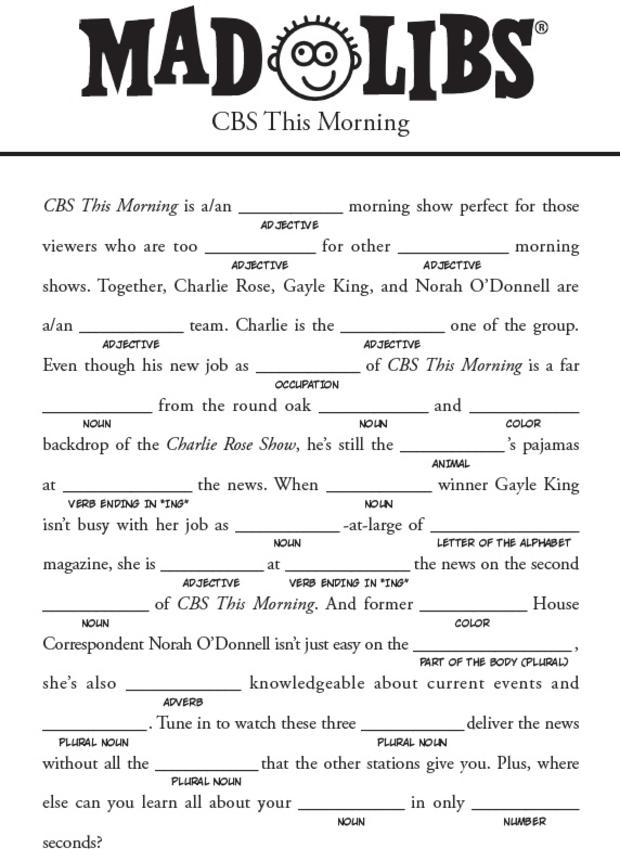

|
What are Mad Libs you could be asking? They're these things: 
Yeah. Those things that were entertaining for the first or second time and then you're bored again. That's what these are. But! I
put a decent amount of effort into making these three actually good. Well, I tried to make them good. I guess, whether or not they
actually are depends on how much you enjoy them. Also, I think the javascript I wrote to do this is very usable and that if you have
a website of your own and you want to do Mad Libs on the same way they're done here, just look at the page source.
|